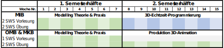

Allgemeines
Herzlich willkommen auf den Webseiten der Veranstaltung Computergrafik im 2. Semester an der Fakultät Digitale Medien der Hochschule Furtwangen.
Inhalt
- Struktur der Veranstaltung
- Ziele der Veranstaltung
- Hinweise zu Blender
- Abkürzungen
1. Struktur der Veranstaltung
Computergrafik unterschiedlich für MIB, OMB und MKB
Computergrafik ist für MIB ein komplettes Modul (6 ECTS) bestehend aus 2 SWS Vorlesung und 2 SWS Praktikum. Für OMB und MKB ist Computergrafik ein Teil (3 ECTS) jeweils eines mit Mathematik kombinierten Moduls. Hier gibt es nur 1 SWS Vorlesung, aber auch 2 SWS Praktikum.
Teilung in zwei Semesterhälften
Das Fach wird in zwei Semesterhälften geteilt. In der ersten Semesterhälfte findet für alle drei Studiengänge (MIB, OMB und MKB) der gleiche Unterricht in Vorlesung und Praktikum statt. Hier wird im wesentlichen Grundlagen der 3D-Modellierung, Shading und Animation gelehrt. Dazu kommt die kostenlose Modelling-Software Blender zum Einsatz.
Ergebnisse einreichen (über FELIX)
In den Übungsgruppen der ersten Semesterhälfte gibt es Hausaufgaben, deren Bearbeitung in wöchentlichen Abgaben kontrolliert wird. Sie haben für die Bearbeitung der Wochenaufgabe von Dienstag (Praktikum) bis Samstag Zeit (=5 Tage).
Ergebnisse müssen bis samstags 23:59 Uhr über die [FELIX-Plattform] (https://felix.hs-furtwangen.de) eingereicht worden sein: [Direkt zum Kurs] (https://felix.hs-furtwangen.de/url/RepositoryEntry/4023025943)
Der gleichnamige Kurs “Computergrafik und 3D-Modellierung” ist auch über den Katalog bzw. die Suche zu finden.
Das Passwort zur Einschreibung in den Kurs lautet “jabberwocky”. Suchen Sie sich anschließend einen Betreuer aus. Bitte verteilen Sie sich gleichmäßig auf alle drei Tutoren (Rot, Grün, Blau).
Folgen Sie den dortigen Beschreibungen um Dateien zur jeweiligen Übung hochzuladen.
WICHTIG: Um eine Datei einzureichen muss eine engültige Abgabe über den Button erfolgen! Wenn Sie Dateien nur hochladen, liegen diese noch nicht den Tutoren vor.
Wer eine Deadline versäumt gilt als “durchgefallen”.
Zweite Semesterhälfte für MIB
In der zweiten Semesterhälfte wird es für MIB eine Einführung in die Echtzeit-3D-Programmierung geben. Dazu gibt es weiterhin 2 SWS Vorlesung und 2 SWS Übungen. Hier wird die an der HFU entwickelte OpenSource-3D-Engine FUSEE eingesetzt. Die Programmierung erfolgt in C#. Hinweise zur Installation der nötigen Software und Entwicklungsumgebung gegen Ende der ersten Semesterhälfte.
Zweite Semesterhälfte für OMB und MKB
Da die Vorlesung mit 2 SWS gehalten wird, haben Teilnehmer der Fächer OMB und MKB bereits nach der Semesterhälfte das Pensum von 1 SWS erreicht (gemessen am gesamten Semester). OMB und MKB sollen dann in der zweiten Semesterhälfte im Rahmen von 2 SWS Praktikum in Projektarbeiten in Kleingruppen ihre Kenntnisse vertiefen und spezialiseren. Als benotete Prüfungsleistung soll eine Ausarbeitung erarbeitet werden. Die genauen Bedingungen werden gegen Ende der ersten Semesterhälfte bekannt gegeben.
Semesterübersicht
Die folgende Tabelle zeigt die Termine und die Aufteilung des aktuellen Semesters.

Wichtige Termine im Semester
| Wann | Was |
|---|---|
| 04. Okt. | Einführung |
| 08. Nov. | Aufruf an OMB und MKB, sich in Teams zu formieren |
| 16. Nov. | Letzte Gemeinsame Übungsgruppe. Für OMB & MKB: Aufgabenstellung für die zweite Semesterhälfte. Für MIB: Vorbereitung für die zweite Semesterhälfte |
| Ab 31. Jan. | OMB und MKB: Abschlusspräsentationen der Animationsprojekte. Genaue Termine werden bekannt gegeben. |
| 25. Jan. | Tag der Medien - Einreichungen sind erwünscht. |
2. Ziele der Veranstaltung
Die im Fach/Modul gelehrten Inhalte verstehen sich als Grundlage für unterschiedlichste Anforderungen, sowohl im weiteren Studienverlauf wie auch im Beruf.
- 3D-Modellierung als Basis-Werkzeug für zukünftige Tätigkeiten
- Im Studium: Illustrationen in Dokumentationen, Ausarbeitungen und Thesen
- Im Beruf: Visualisierungen in Präsentationen, Pitches und Dokumenten
- Einstieg ins Modelling für Games-Begeisterte
- Einstieg in die Echtzeit 3D Programmierung für Games Begeisterte
- Einstieg ins Modelling für Postpro und VFX-Begeisterte
- Grundlagen z.B. für folgende Hauptstudiumsveranstaltungen / WPV
- Datenverarbeitung in der Medienproduktion
- Game-Engineering
- Game-Design
- 3D-Spielentwicklung
- 3D Character Production
- Digital Asset Creation for Games
- VFX und Compositing
- Physically Based Rendering
Der WPV-Katalog verändert sich jedes Semester, sodass die Liste u.U. veraltet ist. Dazu gibt es Veranstaltungen, die nicht regelmäßig jedes Semester angeboten werden.
3. Hinweise zu Blender
Blender ist ein vollwertiges 3D-Modellierungs-, Animations-, Rendering-, Postproduction- und Visual-Effects-Paket. Es ist als OpenSource-Software kostenlos erhältlich, steht aber im Funktionsumfang kostenpflichtigen Tools wie z.B. 3DS-Max, CINEMA 4D, Maya, u.a. in nichts nach, auch wenn diese Werkzeuge sich in der Bedienung z.T. sehr stark voneinander unterscheiden. Beispiele für mit Blender erzeugte Produktionen finden sich unter https://www.blender.org/features/projects/
Blender wurde für das Fach Computergrafik ausgewählt, weil Studenten es auch nach Beenden des Studiums KOSTENLOS für kommerzielle Tätigkeiten einsetzen können. Das bedeutet: Die Skills, die hier erarbeitet werden, stehen später im Beruf - egal in welchem - zur Verfügung und können für die eigene Karriere oder zum Wohl des Arbeitgebers gewinnbringend eingesetzt werden, ohne dass zunächst in die Anschaffung einer Software investiert werden muss.
Literatur
Über die Verwendung von Blender gibt es im Web kostenlos umfangreiche Text- und Video-Tutorials. Auf der Seite Ressourcen & Tutorials sind eine Reihe sehr nützlicher Web-Quellen angegeben. Darüber hinaus finden sich dort auch eine Reihe von (E-)Books, die es in der HFU-Bibliothek für HFU-Angehörige kostenlos zur Ausleihe gibt.
Die Folgenden Abschnitte dieses Skriptes sind überall da sehr kurz gehalten, wo es um Beschreibungen von Blender-Funktionalität geht. Da es zu jedem Thema ausführliche Beschreibungen und Video-Anleitungen im Netz gibt, sind diese Abschnitte als Anregung zu verstehen, sich selbst mit Hilfe von Anleitungen mit der jeweiligen Materie vertraut zu machen.
4. Tastenkürzel
In den folgenden Kapiteln werden die hier angegebenen Abkürzungen verwendet:
| Abkürzung | Bedeutung |
|---|---|
+ |
Gleichzeitiges drücken des linken und des rechten Befehls |
RMB |
Rechte Maustaste |
RMB+Drag |
Maus mit gedrückter rechter Maustaste bewegen |
LMB |
Linke Maustaste |
Ctrl |
Strg-Taste (Steuerung) |
Shift |
Umschalttaste links |
Num # |
Zahl auf der Zahlentastatur |
Tab |
Tabulatortaste |
Alt |
Alt |
Autoren
- Prof. Christoph Müller
- David Lochmann
- Stefan Bregenzer
- Simon Storl-Schulke